Before conducting an analysis, it is good to take a look at the assigned time series data set. Table 1 shows a preview of the first five rows of dataset that will be used in this analysis.
# Load all necessary packageslibrary(fpp3)library(knitr)library(kableExtra)library(readxl)# Function to retrieve custom datasetget_my_data <-function(student_id) {set.seed(student_id) all_data <- readr::read_rds("https://bit.ly/monashretaildata")while(TRUE) { retail <-filter(all_data, `Series ID`==sample(`Series ID`, 1))if(!any(is.na(fill_gaps(retail)$Turnover))) return(retail) }}# Retrieve personal dataretail <-get_my_data(31444059)# Have a look at the datasetkable(head(retail, 5), caption ="Table 1: Preview of Northern Territory's Electrical and Electronic Goods Retailing Data")
Table 1: Preview of Northern Territory’s Electrical and Electronic Goods Retailing Data
State
Industry
Series ID
Month
Turnover
Northern Territory
Electrical and electronic goods retailing
A3349598V
1988 Apr
1.7
Northern Territory
Electrical and electronic goods retailing
A3349598V
1988 May
1.8
Northern Territory
Electrical and electronic goods retailing
A3349598V
1988 Jun
1.5
Northern Territory
Electrical and electronic goods retailing
A3349598V
1988 Jul
1.6
Northern Territory
Electrical and electronic goods retailing
A3349598V
1988 Aug
1.6
As can be seen from this small preview (and if you take a look at the whole data), this investigation will be looking at the turnover (in $Million AUD) of Northern Territory’s electrical and electronic goods retailing industry (Series ID: A3349598V) from April 1998 to December 2022.
Question 1: Plotting the Time Series
The following plots were produced in order to help better understand the turnover (in $Million AUD) of Northern Territory’s electrical and electronic goods retailing industry over the years:
autoplot()
gg_season()
gg_subseries()
Time Series autoplot() Plot
A time series autoplot() plot of the data can be seen in Figure 1.
# Plot the time series using autoplot()retail |>autoplot(Turnover) +labs(title ="Figure 1: Northern Territory's Electrical and Electronic Goods Retailing Turnover\nover Time (1988-2022)", y="Retail Turnover (in $Million AUD)") +theme(plot.title =element_text(hjust =0.5))
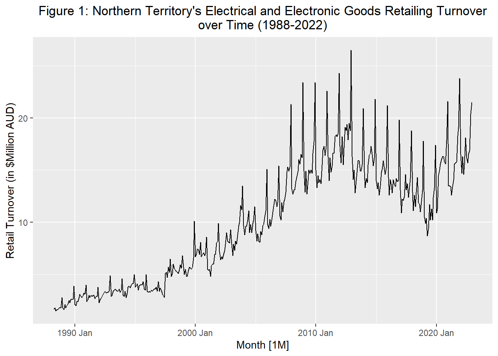
What is Learnt From autoplot() Plot
At a General Glance: We see that the turnover in Nothern Territory’s electrical and electronics good retailing has grown a lot since 1998, with some sort of correction occuring around 2013, but it seems to be recovering and potentially bouncing back.
Trend: There seems to be an overall long-term positive trend in Northern Territory’s turnover of electrical and electronic goods retailing.
Seasonality: There seems to be a growing variance in seasonality as the years progress, evident by the increase in height of the fluctuations over the years.
Cyclical Behaviour: There seems to be a cyclical behavior that may follow the average business cycle of electrical and electronics good retailing in Northern Territory. This behavior can be seen with growth followed by a correction (such as a correction betwen 1996-1998 and 2013-2019).
Time Series gg_season() Plot
A time series gg_season() plot of the data can be seen in Figure 2.
# Plot the time series using gg_season()retail |>gg_season(Turnover) +labs(title ="Figure 2: Northern Territory's Electrical and Electronic Goods Retailing Turnover\nSeasonal Plot (1988-2022)", y="Retail Turnover (in $Million AUD)") +theme(plot.title =element_text(hjust =0.5))
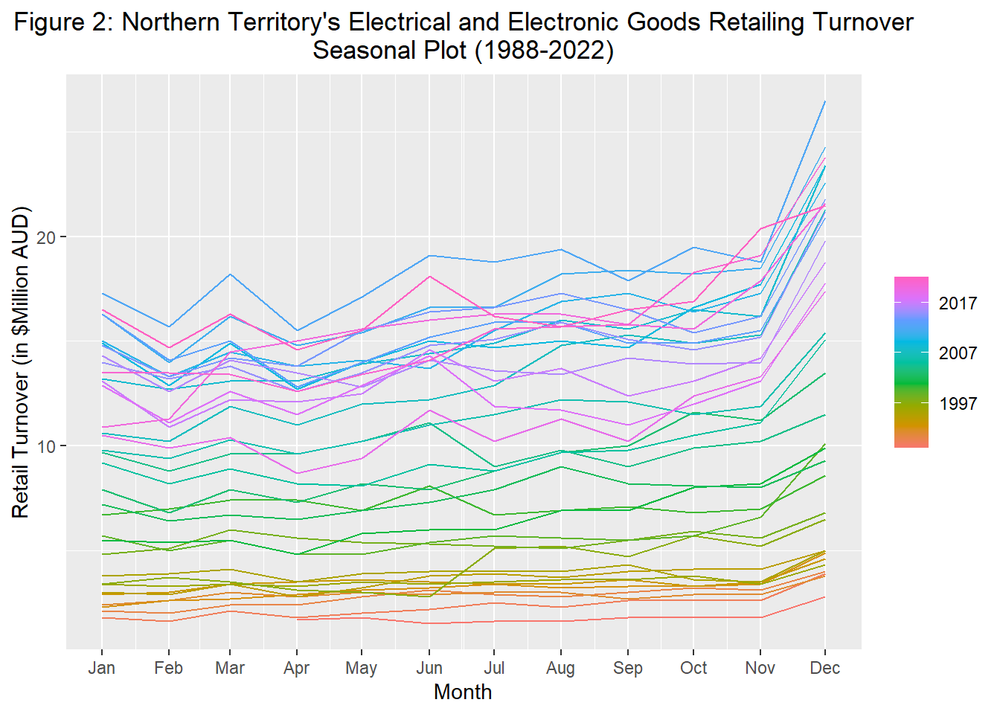
What is Learnt From gg_season() Plot
From the seasonal plot, we can see that Northern Territory’s electrical and electronic goods retailing turnover:
Before 1997 (orange/yellow lines): In general, turnover was quite flat throughout the year but spiked in December. This spike is most likely due to Christmas sales. Additionally, there is not a lot of turnover growth between 1988 and 1997, evident from the small spread of the orange/yellow lines over the years. The low growth is most likely due to the lack of technology being widely available and cheap before 1997.
Between 1997 and 2007 (green lines): Turnover continued to be highest in December, however, there now seemed to be a more visible ramp-up in turnover in the months leading up to December in this period. Additionally, there seemed to be significant growth in turnover between 1997 and 2007, as seen from the large spread of the green lines. This is most likely due to electronics and electrical goods being more affordable and available.
Between 2007 and 2017 (blue/purple lines): Turnover continued to be the highest in December, but with less of a ramp-up and instead a sharp increase between November and December. Significant growth occurred between 2007 and ~2013, visible from the large spread of the blue lines. In fact, the highest turnover to date seemed to occur in December between this period. However, turnover seemed to decline between 2013 and 2017, as the purple lines remained at levels similar to 2007.
Between 2017 and 2022 (pink lines): Turnover continued to be the highest in December, with an increasing turnover occuring in June and November The decline in turnover growth between 2017 and ~2020 persisted (evident from the pink line dropping below the purple line), but it now appears to be recovering, with the dark pink line approaching the top of the chart.
Final Remarks:
Throughout 1998 to 2022, December seemed to always have the highest turnover peak.
The highest retail turnover occurred in December ~2013, and retail levels in 2022 remain lower than this all-time high.
Compared to before 1997, the turnover has grown a lot, but in recent years seemed to have dropped, but on its way to recovery.
While there seems to be fluctuating spikes throughout the months, in particular between February and March each year, this is due to the fact that not all months have the same amount of days (and especially February which has even less than usual). An improvement to this plot would be to normalise the data by the number of days in that month.
Time Series gg_subseries() Plot
A time series gg_subseries() plot of the data can be seen in Figure 3.
# Plot the time series using gg_subseries()retail |>gg_subseries(Turnover) +labs(title ="Figure 3: Northern Territory's Electrical and Electronic Goods Retailing Turnover\nSub Series Plot (1988-2022)", y="Retail Turnover (in $Million AUD)") +theme(plot.title =element_text(hjust =0.5))
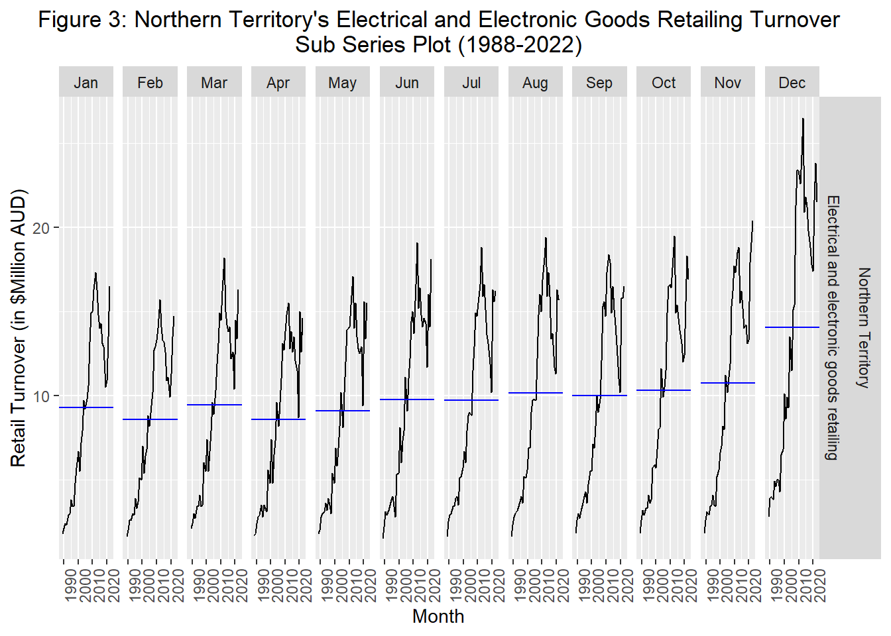
What is Learnt From gg_subseries() Plot
From this plot, we can see that Northern Territory’s electrical and electronic goods retailing turnover:
Growth: Has shown high growth every month from 1988 to 2022, with a visible drop between 2013 and 2020.
Highest Turnover: Has had the highest average turnover in December over the years.
Lowest Turnover: Has had the lowest average turnover in February and April. However, as mentioned, this does not take into account that February has the least amount of days out of all the months. When accounting for the number of days in each month, the lowest turnover month may potentially be neither. Regardless, between February and April, since April has more days than February, it appears that April may be the lowest turnover month.
Pre-December Increase: Has seen a growing average turnover in the months leading up to December, particularly in November.
Question 2: Statistical Features of the Time Series
The time series analysis seen in Question 1 of Northern Territory’s electrical and electronic goods retailing turnover reveals the following key statistical features:
Trend
There is a clear long-term upward trend in turnover, particularly strong growth post-1998.
A notable correction occurred around 2013 to 2019 with a recent sign of recovery approaching 2022.
Seasonality
The data exhibits strong seasonal patterns, with consistent peaks in December each year, likely due to holiday sales.
There is a visible ramp-up in turnover in the months leading to December, especially in November and June in recent years.
Seasonal amplitude has increased over time, indicating growing seasonal variation in turnover.
Cyclic Behaviour
Beyond regular seasonality, the data shows signs of cyclical behavior aligned with broader economic or business cycles, such as:
A correction phase between 1996–1998 and again from 2013–2019.
Periods of accelerated growth, notably from 1997–2007 and 2007–2013.
Variation Over Time
The spread and magnitude of turnover values have increased significantly since the late 1990s, indicating higher variance and stronger market dynamics.
Variance is more pronounced in the later years, reflecting increased market activity and possibly changing consumer behavior.
Outliers and Sudden Changes
~2020 marked a large peak, due to COVID-19 and people needing more electronic applicances for home (more obvious when looking at the remainder term in Figure 5 below).
A sharp dip in growth is observed between 2013 and 2020, potentially driven by external factors (e.g., economic slowdown or market saturation).
Sudden year-on-year increases, especially between 1997–2007, may suggest periods of technological adoption and retail expansion.
Monthly Characteristics
December consistently records the highest turnover, followed by rising activity in November and June in recent years.
February and April show the lowest average turnover, though this is partly due to the fewer number of days in February.
Data Considerations
Observed fluctuations between February and March are partially due to unequal month lengths, suggesting a need to normalise turnover by the number of days per month for more accurate monthly comparisons.
Question 3: Determining an Appropriate Box-Cox Transformation
Box-Cox Transformation Plot
A series of plots of a range of Box-Cox transformation parameters can be seen in Figure 4.
Figure 4: Northern Territory’s Electrical and Electronic Goods Retailing Turnover with a Range of Box-Cox Transformation Parameters, λ
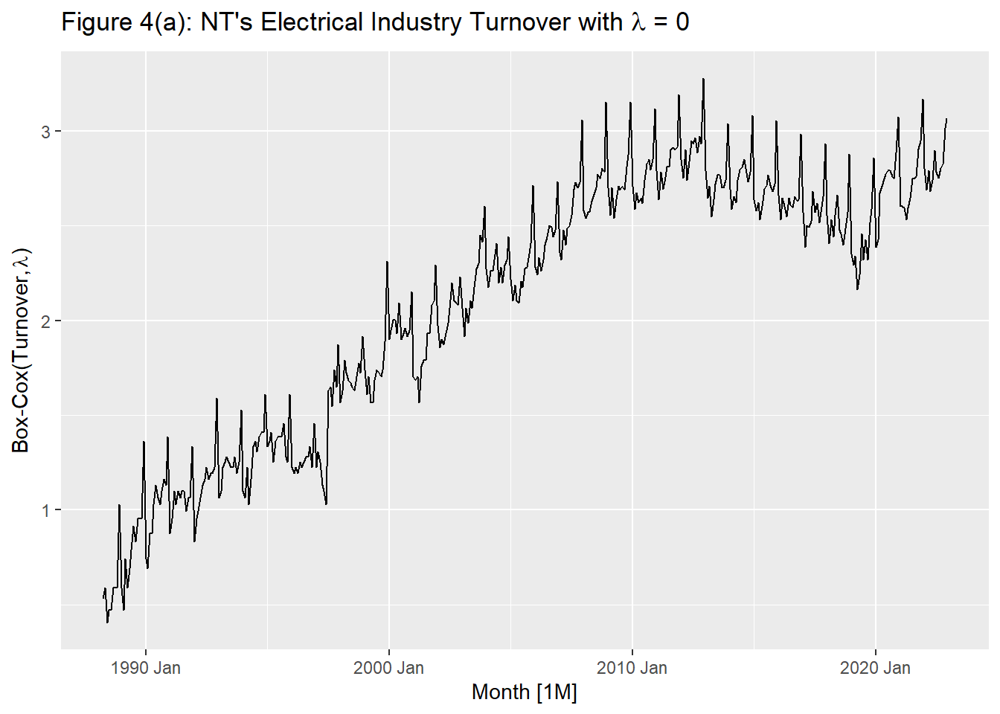
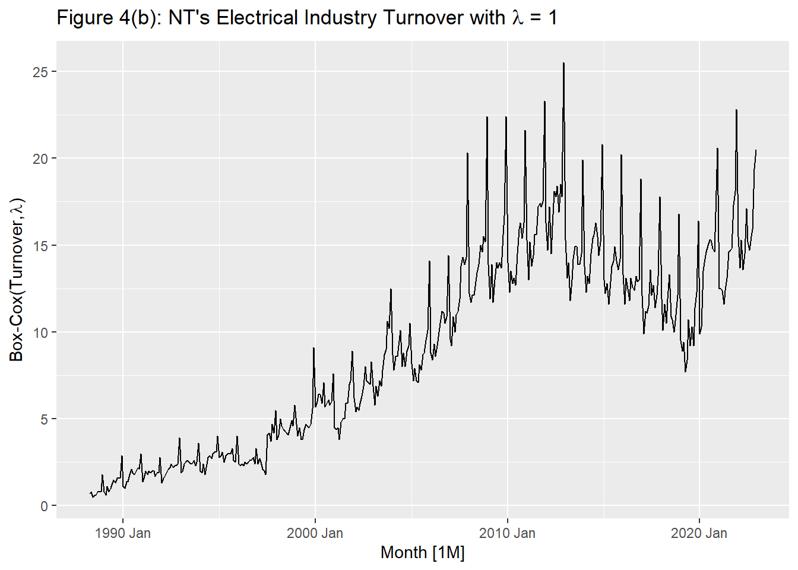
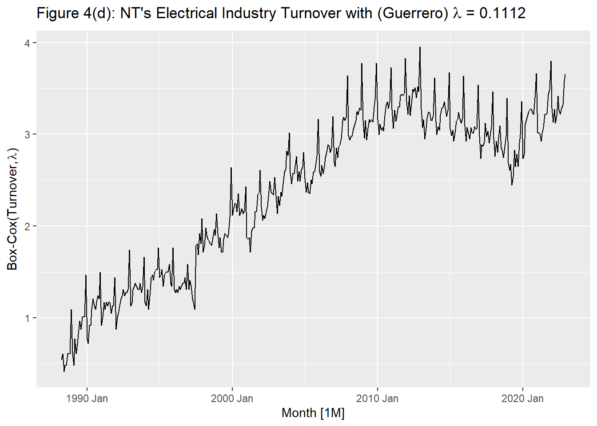
Finding an Appropriate Box-Cox Transformation
The Box-Cox transformation parameter is most suitable between 0 and 1. As such, Figure 4(a) and Figure 4(b) illustrate the two extremes of this. As can be seen in Figure 4(b) (and Figure 1, as it is identical), the variance of the seasonlity grows throughout 1988 to 2022. As such, a Box-Cox Transformation will be suitable as Box-Cox transformations only work (well) when there is only an increase in seasonality variance growth. Figure 4(a) gave an insight that closer to 0, the seasonlity variance will be more equal. As such, trial error was conducted closer to 0, testing \(\lambda = 0.1, 0.2, 0.3, 0.4, 0.5\) and it was found that a \(\lambda = 0.1\) was most suitable (seen in Figure 4(c)). As a good check, this lambda value was compared to a derived lambda value using Guerrero feature. Guerrero determined an acceptable \(\lambda \approx 0.1112\) and the plot can be seen in Figure 4(d).
Explaining the Chosen Transformation Parameter, \(\lambda = 0.1\)
In the end, a \(\lambda = 0.1\) was determined to be the chosen transformation parameter. As the Box-Cox transformation parameter is insensitive to small variance, it makes no major difference to use the exact guerrero deduced \(\lambda\) or the one I deduced through trial and error. As such, choosing the more simple one to one decimal place seemed like the best decision. When investigating different \(\lambda\) values, all values below or equal 0 caused a smaller variance near the end - which is not what we want. Alternatively, all \(\lambda\) values above 0.1 caused the variance in the seasonlity to still grow as the years went on. Therefore, \(\lambda = 0.1\) was chosen as the most suitable, as it resulted in a similar-sized seasonality (i.e., reduced the growth of the seasonality) and even made the plot slightly more linear (not achieving a pure linear fit as there was a big dip in 2013 to 2020).
Question 4: STL Decomposition of the Transformed Data
STL Decomposition Plot
A plot of an STL decomposition of the transformed data (Box-Cox Transformation, \(\lambda = 0.1\)) can be seen in Figure 5.
# Plot the STL decomposition of the transformed datastl_dcmp <- retail |>model(stl =STL(box_cox(Turnover, 0.1) ~trend(window =19) +season(window =13), robust =TRUE )) |>components()stl_dcmp |>autoplot(`box_cox(Turnover, 0.1)`) +labs(title ="Figure 5: Transformed Northern Territory's Electrical and Electronic Goods Retailing\nTurnover STL Decomposition Plot (1988-2022)", y="Retail Turnover (in $Million AUD)") +theme(plot.title =element_text(hjust =0.5))
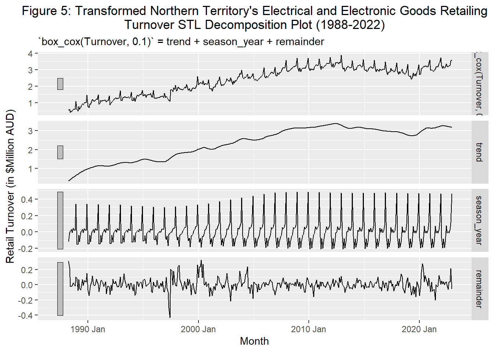
What is Learnt From This STL Decomposition Plot
In regards to Northern Territory’s electrical and electronic goods retailing turnover over the years, we can see from the STL decomposition plot that:
Decomposition Type: There is an additive decomposition of trend, seasonality and remainder occurring.
Trend: There is a positive long-term upward trend, with a large dip occurring between 2013 and approximately 2019, but it is rebounding upwards now. Regarding trend, a window = 19 was chosen as the most appropriate as this resulted in helping remove trend from the remainder term without making the trend curve too smooth/straight.
Seasonality: There is strong seasonality that seems to grow as the years progress. Given the large time horizon of the data, we would expect some slight change in seasonality over the years given electronics and electrical goods have become a lot more common in more recent years and that is why I did not set the window = 'periodic' as it would be an incorrect assumption. Instead, for seasonality, a window = 13 was chosen as the most appropriate as it ensured that seasonality is not captured in the remainder term (for higher windows, seasonality is seen in the remainder term), while still letting seasonality grow slightly over the years as it would be expected to have it grow over the years, given the large time horizon and popularity of electronics and electrical goods.
Remainder: In general, the remainder is somewhat noisy. Some key points that could not be removed from the remainder was the massive drop seen to have occurred around approximately 1997-1998 suggesting that there may have been an event that caused or disrupted the electrical and electronic goods retailing sector in Northern Territory. Another peak also appeared in early 2000 most likely due to the Dot-Com boom and the mass adoption of electronics and electrical goods - like computers. Similarly a large peak occurring in 2020 due to COVID-19 and people needing more electronic applicances for home is also evident in the remainder.
Overall, this STL decomposition I would say adequately decomposes the time series into trend-cycle, seasonality, and remainder as:
The trend-cycle component seems just right to reflect the underlying pattern in the data.
The seasonality seems just right to reflect the underlying pattern in the data.
The remainder does not seem to contain signs of trends, cycles, or seasonality.
Question 5: Stationary Data
A stationary time series is one whose statistical properties do not depend on the time at which the series is observed. Therefore, time series with trends or seasonality are not stationary. As seen above, the data exhibits both trend and seasonality, indicating that it is not stationary. To proceed with ARIMA time series modelling, we must transform the data to make it stationary.
One useful transformation is the Box-Cox transformation, which stabilises the variance of a time series. As observed in Question 3, a Box-Cox transformation with \(\lambda = 0.1\) is appropriate for this dataset. However, while this transformation addresses variance, it does not remove trend or seasonality. To address those components, differencing is required. There are two types of differencing - Non-Seasonal Differencing (the change between one observation and the next) and Seasonal Differencing (the change between one year to the next). The two types of differencing stabilises the mean by removing trends and seasonal patterns.
We first need to evaluate whether seasonal differencing is required. Table 2 outlines the Seasonal Strength (\(F_s\)) and the nsdiffs of the Box-Cox Transformed Time Series.
# Determine the seasonal strengthseasonal_strength <- retail |>features(box_cox(Turnover, 0.1), feat_stl) |>select(seasonal_strength_year)# Determine the ns differencensdiffs_result <- retail |>features(box_cox(Turnover, 0.1), unitroot_nsdiffs) |>select(nsdiffs)#Display the Seasonal Strength and ns difference together in a tablebind_cols(seasonal_strength,nsdiffs_result) |>kable(caption ="Table 2: Seasonal Strength and Number of Seasonal Differences Required (nsdiffs)")
Table 2: Seasonal Strength and Number of Seasonal Differences Required (nsdiffs)
seasonal_strength_year
nsdiffs
0.8242743
1
According to Table 2, the seasonal strength from STL decomposition is \(F_s \approx 0.82\), and the nsdiffs function also recommends 1 seasonal difference. Since \(F_s > 0.64\) and nsdiffs = 1, both metrics confirm that seasonal differencing is necessary. This conclusion aligns with the clear seasonality observed in before. Consequently, seasonal differencing is definitely needed to remove the seasonal component.
Figure 6 illustrates the Seasonally Differenced, Box-Cox Transformed Time Series Data.
# Plot the seasonally differenced, box-cox transformed dataretail |>gg_tsdisplay(difference(box_cox(Turnover, 0.1), 12),"partial" ) +labs(title ="Figure 6: Seasonally Differenced Box-Cox Transformed Time Series\nwith ACF and PACF Plots", y ="Transformed Turnover")
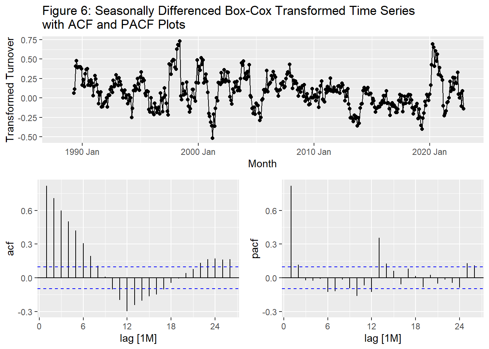
While the seasonality appears reduced in Figure 6, a trend remains somewhat visible. The current ACF plot in Figure 6 clearly indicates that there is some data uncaptured. Performing a Random Walk with Drift with a seasonal difference time series is not the most appropriate in this case as the data seems to trending down in some parts and trending up in other parts. Consequently, as a trend is apparent and changing in the time series, an additional non-seasonal differencing may be necessary instead. To confirm, we conduct both a KPSS test and calculate the number of required regular differences using ndiffs, seen in Table 3.
# Determine the kpss p_valuekpss_result <- retail |>features(difference(box_cox(Turnover, 0.1),12), unitroot_kpss) |>select(kpss_pvalue)# Determine the ndifferencendiffs_result <- retail |>features(difference(box_cox(Turnover, 0.1),12), unitroot_ndiffs) |>select(ndiffs)#Display the kpss p_value and ndifference together in a tablebind_cols(kpss_result,ndiffs_result) |>kable(caption ="Table 3: KPSS p-value and Number of Differences Required (ndiffs) on Seasonally Differenced Data")
Table 3: KPSS p-value and Number of Differences Required (ndiffs) on Seasonally Differenced Data
kpss_pvalue
ndiffs
0.0278238
1
As seen in Table 3, the p-value of the seasonally difference Box-Cox transformed time series is approximately 0.0278238. Recall that the null hypothesis of the KPSS test is that the data is stationary and non-seasonal. Hence, as the p-value is less than 0.05, so we reject the null hypothesis. This suggests that the data is likely non-stationary and that non-seasonal differencing is required to make it stationary. This conclusion is also supported by the ndiffs, with a value of 1, which suggests that the seasonally differenced Box-Cox transformed series requires non-seasonal differencing to achieve stationarity.
Therefore, non-seasonal differencing is applied in addition to the seasonal differencing. Figure 7 illustrates all of the transformations applied.
# Plot the seasonally differenced, box-cox transformed dataretail |>gg_tsdisplay(difference(difference(box_cox(Turnover, 0.1), 12),1),"partial" ) +labs(title ="Figure 7: Fully Differenced (Seasonal + Non-Seasonal) Box-Cox Transformed \nTime Series with ACF and PACF Plots", y ="Transformed Turnover")
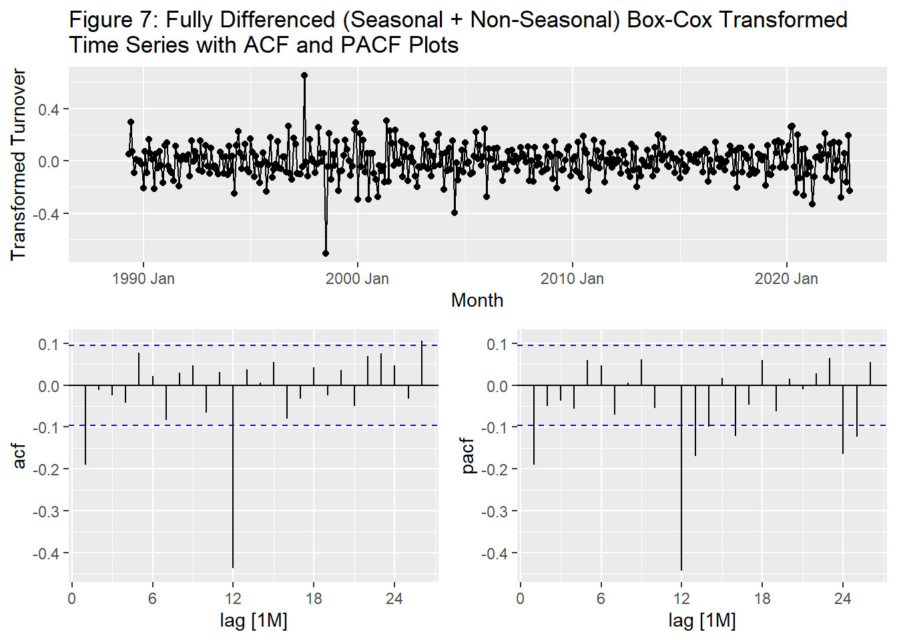
Figure 7 shows the final transformed time series, which exhibits the key characteristics of a stationary series:
Constant mean (no visible trend)
Stable variance over time
No strong seasonal pattern
While some autocorrelation remains in the ACF, the series no longer displays systematic non-stationarity. Thus, we consider the data sufficiently stationary for modelling purposes.
To conclude, the differencing required on the Box-Cox (\(\lambda = 0.1\)) Transformed data includes:
Seasonal Differencing (\(lag = 12\)) to remove annual seasonality, confirmed by STL and nsdiffs.
Non-Seasonal Differencing (\(lag = 1\)) to eliminate remaining trend, confirmed by KPSS and ndiffs.
These differencings ensure that the transformed time series meets the stationary assumption for ARIMA modelling.
Question 6: Short-Listing ARIMA and ETS Models
The current data available ranges from April 1998 to December 2022. For this question, the Northern Territory electrical and electronic goods retailing industry turnover data set is split into two sets:
Train set: Apr 1988 to Dec 2021
Test set: Jan 2021 to Dec 2022
It was done like this such that the test set consisted of the last 24 months of the data provided.
# Create the train set from 1988 to end of 2020 and the test set from 2021 to 2022retail_trainset <- retail |>filter(Month <yearmonth("2021 Jan"))retail_testset <- retail |>filter(Month >=yearmonth("2021 Jan"))
Creating a Short-List of Appropriate ARIMA Models
To create a short-list of appropriate ARIMA models for the data provided, one should plot the ACF and PACF plots to see whether it gives any insights that can help identify the most appropriate ARIMA models.
An ACF and PACF plot with 72 lags of the transformed Northern Territory electrical and electronic goods retail turnover data can be seen in Figure 8 and Figure 9, respectively.
An ARIMA model can be written as: \[ARIMA(p,d,q)(P,D,Q)[m]\] Where \((p,d,q)\) represent the non-seasonal AR, differencing, and MA terms, and \((P,D,Q)[m]\) represent the seasonal AR, differencing, and MA terms, with seasonal period \(m=12\) for monthly data.
Non-Seasonal Component, \((p,d,q)\)
From the ACF Plot in Figure 8:
A significant negative spike at lag 1, followed by a rapid decay.
Ignoring the major significant spikes at lags 12 and 36 (which will be discussed later in the context of the seasonal component), there are also minor significant spikes throughout the plot, which are arguably negligible.
A sinusoidal pattern is arguably present.
From the PACF Plot in Figure 9:
A significant negative spike at lag 1, followed by a rapid decay.
Ignoring the major spikes at lags 12, 24, 36, and 48 (related to the seasonal component), there are other small spikes, such as at lags 13 and 16, which can also be considered negligible.
A sinusoidal pattern is again arguably present.
Therefore, regarding the non-seasonal \((p,d,q)\) terms:
As established in Question 5, non-seasonal differencing was required to achieve stationarity. Thus, we set \(d = 1\) for all suggested models.
A significant spike at lag 1 in the PACF, with the ACF showing a sinusoidal decay, suggests an AR(1) process: \((p,d,q) = (1,1,0)\).
Alternatively, a significant spike at lag 1 in the ACF, with the PACF exhibiting a sinusoidal pattern, suggests an MA(1) process: \((p,d,q) = (0,1,1)\).
Given both plots show sinusoidal behavior, both configurations are plausible. Thus, two potential non-seasonal components are considered:
\((p,d,q) = (1,1,0)\)
\((p,d,q) = (0,1,1)\)
Seasonal Component, \((P,D,Q)[m]\)
From the ACF Plot in Figure 8:
A major significant spike at lag 12, followed by another at lag 36. No significant spikes appear at lags 24, 48, or 60.
From the PACF Plot in Figure 9:
Major significant spikes at lags 12, 24, 36, and 48, with a somewhat exponential decay.
Therefore, regarding the seasonal \((P,D,Q)[m]\) terms:
As established in Question 5, seasonal differencing was necessary to achieve stationarity. Hence, we set \(D = 1\).
The somewhat exponential decay in the PACF suggests a lack of seasonal AR terms: \(P = 0\).
In the ACF plot, the spike at lag 12 is significant, while lag 24 is not, suggesting a seasonal MA(1) process: \(Q = 1\).
Therefore, the seasonal component is: \((P,D,Q) = (0,1,1)\)
Plausible ARIMA Models
Based on the ACF and PACF plots, three plausible ARIMA models for this data set include:
Model 1: ARIMA(1,1,0)(0,1,1)[12]
Non-seasonal: AR(1) term (PACF spike at lag 1) and first-order differencing.
Seasonal: MA(1) term (ACF spike at lag 12) and first-order seasonal differencing.
Model 2: ARIMA(0,1,1)(0,1,1)[12]
Non-seasonal: MA(1) term (ACF spike at lag 1) and first-order differencing.
Seasonal: MA(1) term (ACF spike at lag 12) and first-order seasonal differencing.
Model 3: ARIMA Automatically Chosen
One should always also consider the ARIMA model automatically chosen for the data. This is because the automatically select ARIMA model is the best-fitting model based on AIC values.
The three models, ARIMA(1,1,0)(0,1,1)[12], ARIMA(0,1,1)(0,1,1)[12] and the automatically selected ARIMA model, were fitted to the training data and used to forecast the test period from 2021–2022. Figure 10 presents the forecasts produced by each model.
# Fit three ARIMA modelsARIMA_fits <- retail_trainset |>model(ARIMA_110011 =ARIMA(box_cox(Turnover, 0.1) ~pdq(1,1,0) +PDQ(0,1,1)),ARIMA_011011 =ARIMA(box_cox(Turnover, 0.1) ~pdq(0,1,1) +PDQ(0,1,1)),ARIMA_auto =ARIMA(box_cox(Turnover, 0.1), stepwise =FALSE, approximation =FALSE))# Forecast for 24 months (2021–2022)ARIMA_forecasts <- ARIMA_fits |>forecast(h ="24 months")# Plot forecasts (automatically back-transforms Box-Cox)ARIMA_forecasts |>autoplot(retail_testset, level =NULL) +labs(title ="Figure 10: ARIMA Forecasts for NT Electrical & Electronic Goods Turnover",y="Retail Turnover (in $Million AUD)",x ="Year" )
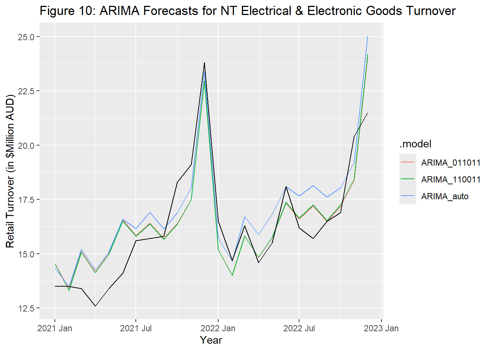
From Figure 10, we can observe that all three ARIMA models perform reasonably similar in predicting the Northern Territory’s Electrical and Electronic Goods Turnover, with the one automatically selected seeming to perform slightly better in some parts and slightly worse in other parts - compared to the two picked models.
It is also worth noting that the auto-selected model was ARIMA(1,1,1)(2,1,2)[12]. Both the seasonal and non-seasonal component of the automatically selected model would not have been predictable from the ACF or PACF plots.
Table 4 outlines the AIC score for the three different ARIMA models.
# Compare Models AICARIMA_fits |>glance() |>select(.model, AIC) |>kable(caption ="Table 4: AIC Score for the Different ARIMA Models")
Table 4: AIC Score for the Different ARIMA Models
.model
AIC
ARIMA_110011
-684.2086
ARIMA_011011
-689.7166
ARIMA_auto
-691.9995
As can be seen in Table 4, the model with the lowest AIC Score is the automatically selected ARIMA model (ARIMA(1,1,1)(2,1,2)[12]). This suggests that the automatically selected model is the best in-sample fit. This makes sense as the automatically selected model was deduced by having the lowest AIC score.
Regarding RMSE, Table 5 shows the test set RMSE scores for the different models.
# Compare RMSE ARIMA_forecasts |>accuracy(retail_testset) |>select(.model, RMSE) |>kable(caption ="Table 5: RMSE Score for the Different ARIMA Models")
Table 5: RMSE Score for the Different ARIMA Models
.model
RMSE
ARIMA_011011
1.275618
ARIMA_110011
1.272721
ARIMA_auto
1.440088
As shown in Table 5, the ARIMA(1,1,0)(0,1,1)[12] model had the lowest RMSE score, followed extremely closesly by ARIMA(0,1,1)(0,1,1)[12], and then the automatically selected ARIMA model. Consequently, this suggests that the best model based on the test set RMSE is the ARIMA(1,1,0)(0,1,1)[12] model. Note that both of the hand selected models performed better according to the RMSE score than the automatically selected model determined as the best model according to AIC.
For future forecasts, the best model to use would be the ARIMA(1,1,0)(0,1,1)[12] rather than the ARIMA(0,1,1)(0,1,1)[12] or the automatically chosen ARIMA model. The reason is that RMSE is a better measure of out-of-sample performance, meaning it performs best on unseen data. Therefore, I would choose the ARIMA(1,1,0)(0,1,1)[12] model for future forecasts, as it generalises better to new observations. Although the RMSE score for the ARIMA(0,1,1)(0,1,1)[12] was really close, when looking at the AIC score, it also did not perform as well compared to the best model, making ARIMA(1,1,0)(0,1,1)[12] the better choice. Additionally, although the ARIMA(1,1,0)(0,1,1)[12] had a slightly higher AIC score than the automatically selected one, it did, however, have less parameters. Therefore, when considering the number of parameters as well as performance, ARIMA(1,1,0)(0,1,1)[12] seems like the most appropriate model choice.
Creating a Short-List of Appropriate ETS Models
To create a short-list of appropriate ETS models for the data provided, one should better understand the data to see whether it gives any insights that can help identify the most appropriate ETS models.
As we saw in the Figures in Question 1 and Question 4:
Error: The remainder component appears relatively noisy, with certain events resulting in some fluctuations.
Trend: There is a clear upward trend in the Box-Cox transformed retail turnover data, indicating a long-term growth in the series.
Seasonality: There is strong seasonality that seems to grow and change over the years - most likely due to popularisation and mass adoption of electronics and electrical goods.
Plausible ETS Models
Based on this information, three plausible ETS models for this data set include:
Model 1: ETS(A, A, A)
Error: Additive (A) The fluctuations in the remainder component are relatively stable, suggesting additive error is appropriate.
Trend: Additive (A) The trend is not as pronounced as a multiplicative trend, and although it shows long-term growth, the growth rate does not seem to accelerate multiplicatively, thus an additive trend is a reasonable choice.
Seasonality: Additive (A) The seasonal pattern shows a somewhat regular and somewhat constant fluctuation, so an additive seasonal model is appropriate.
Model 2: ETS(A, Ad, A)
Error: Additive (A) The fluctuations in the remainder component are relatively stable, suggesting additive error is appropriate.
Trend: Additive Damped (Ad) The additive damped trend is chosen because the series exhibits growth that appears to slow down over time. In this case, the trend starts off relatively strong but gradually becomes less pronounced, which is characteristic of a damped trend.
Seasonality: Additive (A) The seasonal pattern shows a somewhat regular and somewhat constant fluctuation, so an additive seasonal model is appropriate.
Model 3: ETS Automatically Chosen
One should always also consider the ETS model automatically chosen for the data. This is because the automatically select ETS model is the best-fitting model based on AIC values.
The three models, ETS(A,A,A), ETS(A,Ad,A) and the automatically selected ETS model, were fitted to the training data and used to forecast the test period from 2021–2022. Figure 11 presents the forecasts produced by each model.
# Fit three ARIMA modelsETS_fits <- retail_trainset |>model(ETS_AAA =ETS(box_cox(Turnover, 0.1) ~error("A") +trend("A") +season("A")),ETS_AAdA =ETS(box_cox(Turnover, 0.1) ~error("A") +trend("Ad") +season("A")),ETS_auto =ETS(box_cox(Turnover, 0.1)))# Forecast for 24 months (2021–2022)ETS_forecasts <- ETS_fits |>forecast(h ="24 months")# Plot forecasts (automatically back-transforms Box-Cox)ETS_forecasts |>autoplot(retail_testset, level =NULL) +labs(title ="Figure 11: ETS Forecasts for NT Electrical & Electronic Goods Turnover",y ="Retail Turnover (in $Million AUD)",x ="Year" )
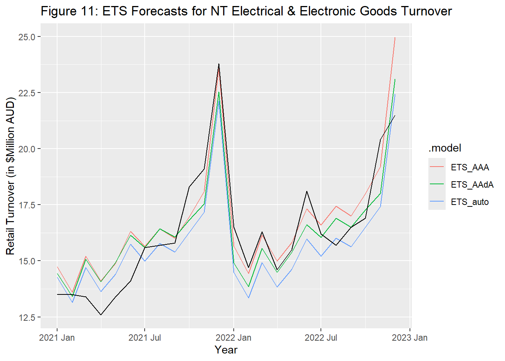
From Figure 11, we can observe that all three ETS models perform reasonably similar in predicting the Northern Territory’s Electrical and Electronic Goods Turnover, with the ETS(A,Ad,A) seeming to potentially perform the best. It is also worth noting that the auto-selected ETS model ETS(A,N,A).
Table 6 outlines the AIC score for the three different ETS models.
# Compare Models AICETS_fits |>glance() |>select(.model, AIC) |>kable(caption ="Table 6: AIC Score for the Different ETS Models")
Table 6: AIC Score for the Different ETS Models
.model
AIC
ETS_AAA
576.4497
ETS_AAdA
522.6214
ETS_auto
521.0123
As can be seen in Table 6, the model with the lowest AIC Score is the automatically selected ETS model. This suggests that the automatically selected ETS model is the best in-sample fit. This makes sense as the automatically selected model was deduced by having the lowest AIC score.
Regarding RMSE, Table 7 shows the test set RMSE scores for the different ETS models.
# Compare RMSE ETS_forecasts |>accuracy(retail_testset) |>select(.model, RMSE) |>kable(caption ="Table 7: RMSE Score for the Different ETS Models")
Table 7: RMSE Score for the Different ETS Models
.model
RMSE
ETS_AAA
1.249461
ETS_AAdA
1.208306
ETS_auto
1.350527
As shown in Table 7, the ETS(A,Ad,A) model had the lowest RMSE score, followed by ETS(A,A,A) model, and then the automatically selected ETS model. Consequently, this suggests that the best model based on the test set RMSE is the ETS(A,Ad,A) model. Note that both of the visually deduced models perform better according to the RMSE score than the automatically selected ETS model determined as the best model according to AIC.
For future forecasts, the best ETS model to use would be the ETS(A,Ad,A) model rather than automatically selected ETS model determined by the lowest AIC. The reason is that RMSE is a better measure of out-of-sample performance, meaning it performs best on unseen data. Therefore, I would choose the ETS(A,Ad,A) model for future forecasts, as it generalises better to new observations.
Comparing ARIMA and ETS Models
Note that when comparing the ARIMA models to the ETS models, one cannot use the AIC score. This is because the AIC score is only useful when comparing models of the same type. If we wanted to compare the ARIMA models to the ETS models, we would have to determine how well it went on an out-of-sample test - such as the RMSE score. When comparing Tables 5 and 7, the best ETS model (ETS(A,Ad,A)), has a lower RMSE score than the best ARIMA model (ARIMA(1,1,0)(0,1,1)[12]), indicating that the ETS(A,Ad,A) model may be the most appropriate out of all models.
Question 7: Evaluating the best ARIMA and ETS Model
As seen in Question 6, the most appropriate ARIMA and ETS Model from the Short List include:
ARIMA(1,1,0)(0,1,1)[12]
ETS(A,Ad,A)
Evaluating the Best ARIMA Model
Parameter Estimates
The parameter estimates for the ARIMA(1,1,0)(0,1,1)[12] model can be seen below.
# Extract the best ARIMA modelARIMA_best_fit <- ARIMA_fits |>select(ARIMA_110011) # Output the parameter estimatesARIMA_best_fit |>report()
These parameters suggest that the differenced turnover series is negatively influenced by its values 1 month ago, with the first lag having a somewhat strong effect. There is also a strong negative seasonal moving average component, indicating that unexpected shocks from the same period in the previous year significantly impact the current turnover.
Residual Diagnostics
To evaluate whether the residuals of the best ARIMA model is white noise, we will look at both the ACF Plot and the LJung Box Calculations.
ACF Plot
A residual plot with ACF can be seen in Figure 12.
# Check the residualsARIMA_best_fit |>gg_tsresiduals() +labs(title ="Figure 12: Residual Diagnostic Plots of Best ARIMA Model")
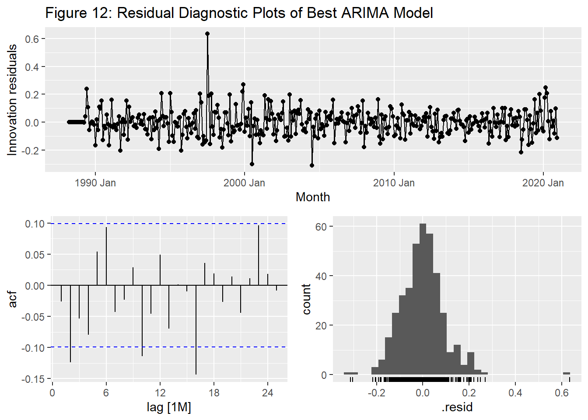
Do the residuals appear to be white noise?
The residuals can be classified as white noise if the residuals are i.i.d., and as such meaning:
The residuals must have a mean of 0
The residuals should be uncorrelated
The residuals should exhibit constant variance (homoskedastic)
The residuals should follow a normal distribution
Looking at Figure 12 we can say that:
The residuals do seem to have a mean of 0 as can be seen in the scatter plot (with only one main outlier)
The residuals do seem to follow somewhat of a normal distribution as seen the histogram (with only one main outlier)
The residuals do seem to be homoskedastic, with a somewhat constant variance in the innovation residuals, as seen in the scatter plot. (Note there are a few large spikes, most likely due to an external event, but in general it is homoskedastic)
However, we can also see from Figure 12 that:
The residuals are correlated, as seen in the ACF plot. We observe correlation in the ACF plot because, for the residuals to be uncorrelated, we would expect 95% of the spikes in the ACF to lie within the blue dashed line threshold. However, this is not the case, as 3 out of 24 (12.5%) lines lie outside the blue dashed threshold.
Consequently, given these factors, it is clear from the ACF plot that the residuals do appear to be white noise.
LJung Box Calculations
The LJung Box Calculations summary can be seen in Table 8.
# Check the ljung boxARIMA_ljung_box_val <- ARIMA_best_fit |>augment() |>filter(!is.na(.innov)) |>features(.innov, ljung_box, lag =24) |>select(.model, lb_pvalue) |>rename(Model = .model, 'LB P-Value'= lb_pvalue)kable(ARIMA_ljung_box_val , caption ="Table 8: LJung Box Calculations P-value for the Best ARIMA Model") |>kable_styling(full_width =FALSE)
Table 8: LJung Box Calculations P-value for the Best ARIMA Model
Model
LB P-Value
ARIMA_110011
0.0242949
From the Ljung-Box test, the LB P-value is the most insightful in determining whether the residuals appear to be white noise. Given that the LB P-Value is approximately 0.02, which is less than 0.05, we can conclude that the residuals are distinguishable from a white noise series. In other words, it indicates that there is significant autocorrelation in the residuals. This suggests that the ARIMA(1,1,0)(0,1,1)[12] model may not have captured all the patterns in the data.
Overall Conclusion
Overall, it can be concluded that both the ACF plot and the Ljung-Box calculation suggest that the residuals of the best ARIMA model do not appear to be white noise.
Forecasts and Prediction Intervals
The point forecasts and the 80% prediction intervals for the last 24 months (Jan 2021 to Dec 2022) can be visualised in Figure 13 and numerically summarised in Table 9.
# Plot the forecasts and intervalsARIMA_forecasts |>filter(.model =="ARIMA_110011") |>autoplot(retail_testset, level =80) +labs(title ="Figure 13: Forecast and Prediction Intervals from Best ARIMA Model\nof the Last 24 Months ", y="Retail Turnover (in $Million AUD)")
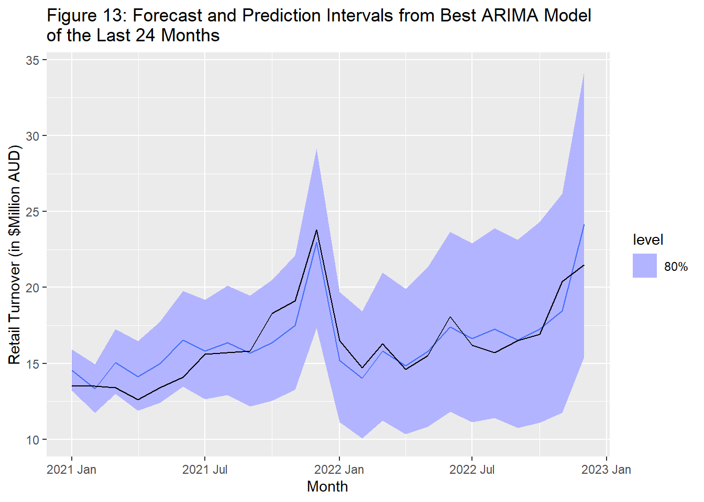
# Outline the numerical values of the point forecasts and intervalsARIMA_forecasts |>filter(.model =="ARIMA_auto") |>hilo(level =80) |>rename(`Point Forecast`= .mean, `80% Prediction Interval`=`80%`) |>mutate(`80% Prediction Interval`=gsub("80$", "", `80% Prediction Interval`)) |># Remove the "80" at the endselect(Month, `Point Forecast`, `80% Prediction Interval`) |>kable(caption ="Table 9: Point Forecast and Prediction Intervals from Best ARIMA Model")|>kable_styling(full_width =FALSE)
Table 9: Point Forecast and Prediction Intervals from Best ARIMA Model
Month
Point Forecast
80% Prediction Interval
2021 Jan
14.34239
[13.0350430739502, 15.6931474500099]
2021 Feb
13.47770
[11.9511539699666, 15.0677944053233]
2021 Mar
15.21908
[13.3031535137343, 17.2241431058847]
2021 Apr
14.25157
[12.2819002189327, 16.3223576196695]
2021 May
15.09001
[12.8622382206396, 17.4404587925225]
2021 Jun
16.60220
[14.0194588762993, 19.3353151771688]
2021 Jul
16.15937
[13.498345736635, 18.9850747583993]
2021 Aug
16.91123
[14.0004065155846, 20.0109768124907]
2021 Sep
16.14162
[13.2252339910113, 19.2574494558045]
2021 Oct
16.88327
[13.7213362517933, 20.2700408161107]
2021 Nov
18.04023
[14.5563178866102, 21.780281260365]
2021 Dec
23.39352
[18.8324587944347, 28.2934208576209]
2022 Jan
15.72744
[12.3545734678926, 19.3784963012663]
2022 Feb
14.67038
[11.3596375840711, 18.2700452537878]
2022 Mar
16.72217
[12.848020514184, 20.9444363534216]
2022 Apr
15.89242
[12.0611607558765, 20.0835801848636]
2022 May
16.81226
[12.6482378812111, 21.3794917240365]
2022 Jun
18.09505
[13.5080603261692, 23.1379946852744]
2022 Jul
17.65525
[13.0413593017258, 22.7438684969651]
2022 Aug
18.15425
[13.2952670536563, 23.5269673515759]
2022 Sep
17.61568
[12.7681306714155, 22.9922746714247]
2022 Oct
18.05407
[12.9786406271594, 23.6971717563592]
2022 Nov
19.20163
[13.7124265712235, 25.316754762731]
2022 Dec
25.02053
[17.8892267429037, 32.9622192508163]
As can be seen in Figure 13, the point forecasts lie close to the true retail turnover, with the true retail turnover being within the 80% confidence interval. This illustrates that the ARIMA model is very suitable at making out-of-sample predictions. Note as can be seen in Table 9 and seen in Figure 13, the confidence intervals seems to grow as time goes on, which is reasonable as predictions further in the future are more uncertain. Overall, the ARIMA(1,1,0)(0,1,1)[12] model seems to appropriately capture the data set quite well.
Evaluating the Best ETS Model
Parameter Estimates
The parameter estimates for the ETS(A, Ad, A) model can be seen below.
# Extract the best ARIMA modelETS_best_fit <- ETS_fits |>select(ETS_AAdA)# Display the parameter estimatesETS_best_fit |>report()
As seen, the ETS smoothing parameter estimates are:
alpha (\(\alpha\)) = 0.70836
beta (\(\beta\)) = 0.02010977
gamma (\(\gamma\)) = 0.08702635
phi (\(\phi\)) = 0.908875
The relatively high alpha signifies that the model heavily relies on the most recent observations for forecasting the level. The quite low beta and gamma values suggest that trend and seasonality are present but do not dominate the model. The damping factor (phi) is close to 1, meaning the trend component will gradually diminish over time.
We also see from the initial trend, b[0], as it is negative, it signifies that the trend is slightly decreasing.
Residual Diagnostics
To evaluate whether the residuals of the best ETS model is white noise, we will look at both the ACF Plot and the LJung Box Calculations.
ACF Plot
A residual plot with ACF can be seen in Figure 14.
# Check the residualsETS_best_fit |>gg_tsresiduals() +labs(title ="Figure 14: Residual Diagnostic Plots of Best ETS Model")
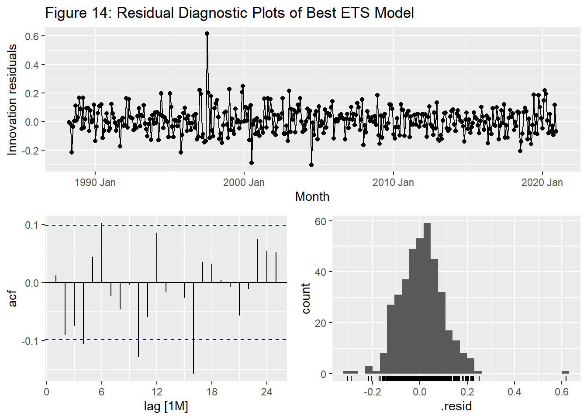
Do the residuals appear to be white noise?
The residuals can be classified as white noise if the residuals are i.i.d., and as such meaning:
The residuals must have a mean of 0
The residuals should be uncorrelated
The residuals should exhibit constant variance (homoskedastic)
The residuals should follow a normal distribution
Looking at Figure 14 we can say that:
The residuals do seem to have a mean of 0 as can be seen in the scatter plot
The residuals do seem to be homoskedastic, with a somewhat constant variance in the innovation residuals, as seen in the scatter plot. (Note there are one or two large spikes, most likely due to an external event, but in general it is homoskedastic)
The residuals do seem to follow somewhat of a normal distribution as seen the histogram
However, we can also see from Figure 14 that:
The residuals are correlated, which can be seen in the ACF Plot. We see there is correlation in the ACF plot because for it to be uncorrelated, we would expect 95% of the spikes in the ACF to lie within the blue dashed line threshold, however, this is not the case, with 4 out of 24 (16.67%) lines lying outside the blue dashed threshold.
Consequently, given these factors, it is clear from the ACF plot that the residuals do not appear to be white noise.
LJung Box Calculations
The LJung Box Calculations summary can be seen in Table 10.
# Check the ljung boxETS_ljung_box_val <- ETS_best_fit |>augment() |>filter(!is.na(.innov)) |>features(.innov, ljung_box, lag =24) |>select(.model, lb_pvalue) |>rename(Model = .model, 'LB P-Value'= lb_pvalue)kable(ETS_ljung_box_val , caption ="Table 10: LJung Box Calculations P-value for the Best ETS Model") |>kable_styling(full_width =FALSE)
Table 10: LJung Box Calculations P-value for the Best ETS Model
Model
LB P-Value
ETS_AAdA
0.0078574
From the LJung Box Test, the LB P-Value is the most insightful in telling us whether the residuals appear to be white noise. Given that the LB P-Value is 0.01, which is less than 0.05, we can conclude that the residuals are distinguishable from a white noise series. In other words, it indicates that there is significant autocorrelation in the residuals. This suggests that the best ETS model may not have captured all the patterns in the data.
Overall Conclusion
Overall, it can be seen that both the ACF Plot and the LJung Box Calculation conclude that the residuals do not appear to be white noise.
Forecasts and Prediction Intervals
The point forecasts and the 80% prediction intervals for the last 24 months (Jan 2021 to Dec 2022) can be visualised in Figure 15 and numerically summarised in Table 11.
ETS_forecasts |>filter(.model =="ETS_AAdA") |>autoplot(retail_testset, level =80) +labs(title ="Figure 15: Forecast and Prediction Intervals from Best ETS Model\nof the Last 24 Months ", y="Retail Turnover (in $Million AUD)")
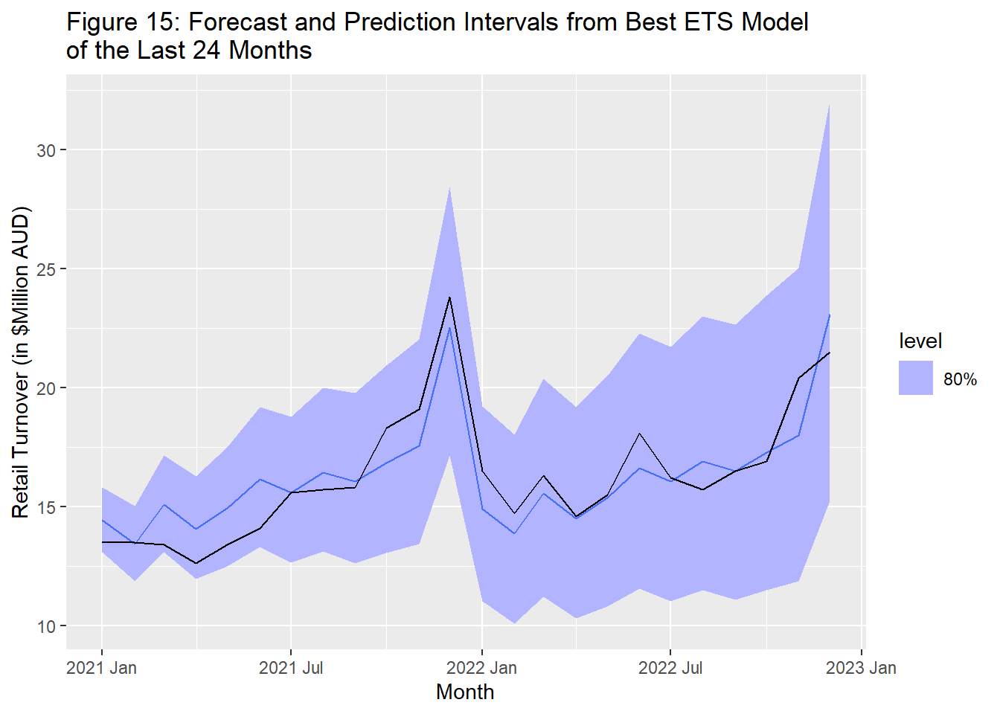
ETS_forecasts |>filter(.model =="ETS_AAdA") |>hilo(level =80) |>rename(`Point Forecast`= .mean, `80% Prediction Interval`=`80%`) |>mutate(`80% Prediction Interval`=gsub("80$", "", `80% Prediction Interval`)) |># Remove the "80" at the endselect(Month, `Point Forecast`, `80% Prediction Interval`) |>kable(caption ="Table 11: Point Forecast and Prediction Intervals from Best ETS Model")|>kable_styling(full_width =FALSE)
Table 11: Point Forecast and Prediction Intervals from Best ETS Model
Month
Point Forecast
80% Prediction Interval
2021 Jan
14.42926
[13.0969453656855, 15.8064095421249]
2021 Feb
13.41356
[11.8786758037004, 15.0130370996692]
2021 Mar
15.08173
[13.0990347845057, 17.1609592407224]
2021 Apr
14.05995
[11.9654501426982, 16.2708833527823]
2021 May
14.92311
[12.4860712930113, 17.5096102519884]
2021 Jun
16.14305
[13.2995109774431, 19.1757972893913]
2021 Jul
15.59370
[12.6305287457817, 18.7709337739244]
2021 Aug
16.43532
[13.1216996299754, 20.0043099335187]
2021 Sep
16.05704
[12.6201985432599, 19.7767299316876]
2021 Oct
16.82414
[13.0470103255997, 20.928997981057]
2021 Nov
17.54646
[13.4313205919344, 22.0364344421264]
2021 Dec
22.53728
[17.1430761783736, 28.4341444168191]
2022 Jan
14.90734
[11.0136141398964, 19.2014617917176]
2022 Feb
13.85154
[10.072201446683, 18.0393493383655]
2022 Mar
15.55327
[11.2078725743239, 20.3812394364855]
2022 Apr
14.49465
[10.2851311049195, 19.1930159514622]
2022 May
15.37042
[10.7939201877379, 20.4939888699801]
2022 Jun
16.61125
[11.5578713951868, 22.2840596681831]
2022 Jul
16.04041
[11.0110721379254, 21.708460443003]
2022 Aug
16.89404
[11.4852388410979, 23.0068969092401]
2022 Sep
16.49998
[11.0758772368418, 22.6526526714617]
2022 Oct
17.27777
[11.4892555215132, 23.8616105371965]
2022 Nov
18.00970
[11.8644925701507, 25.0179896755734]
2022 Dec
23.09903
[15.2269513497249, 32.0750930820578]
As can be seen in Figure 15, similar to the ARIMA model, the ETS point forecasts lie close to the true retail turnover, with the true retail turnover being within the 80% confidence interval. This illustrates that the ETS model is very suitable at making out-of-sample predictions. Note as can be seen in Table 11 and seen in Figure 15, the ETS prediction intervals seems to grow as time goes on, which is reasonable as predictions further in the future are more uncertain. Overall, the ETS(A,Ad,A) model seems to appropriately capture the data set quite well.
Question 8: Compare the Results of the ARIMA and ETS Model
As can be seen in the above sections, the best ARIMA and ETS Model make similar point forecasts and prediction intervals for the 24 months period in the test set. The RMSE score for both of the best models can be seen in Table 12.
# Compare RMSE bind_rows( ETS_forecasts |>filter(.model =="ETS_AAdA") |>accuracy(retail_testset) |>select(.model, RMSE), ARIMA_forecasts |>filter(.model =="ARIMA_110011") |>accuracy(retail_testset) |>select(.model, RMSE)) |>kable(caption ="Table 12: RMSE Score for the two Best ETS Model")
Table 12: RMSE Score for the two Best ETS Model
.model
RMSE
ETS_AAdA
1.208306
ARIMA_110011
1.272721
As can be seen in Table 12, the best ETS model, ETS (A,Ad,A) has a lower RMSE score than the best ARIMA model, the ARIMA(1,1,0)(0,1,1)[12] model. This suggests that the ETS model will perform better on out-of-sample forecasts. Consequently, based on the test set, the best model is the ETS (A,Ad,A) model.
Question 9: Full Data Training and Forecasting
The two best models, the ETS (A, Ad, A) and the ARIMA(1,1,0)(0,1,1)[12] Model are now going to be applied to the full data.
Forecasts were made for two years (24 months) past the data provided, i.e. Jan 2023 to Dec 2024, as can be seen in Figure 16.
# Fit the best ARIMA and ETS models on the full data setbest_fits <- retail |>model(ARIMA_110011 =ARIMA(box_cox(Turnover, 0.1) ~pdq(1,1,0) +PDQ(0,1,1)),ETS_AAdA =ETS(box_cox(Turnover, 0.1) ~error("A") +trend("Ad") +season("A")))# Forecast the next 24 months (2023–2024)best_forecasts <- best_fits |>forecast(h ="24 months")# Plot forecasts (automatically back-transforms Box-Cox)best_forecasts |>autoplot(retail, level =NULL) +labs(title ="Figure 16: The Best ARIMA and ETS Forecasts for NT Electrical & Electronic Goods Turnover", , y="Retail Turnover (in $Million AUD)",x ="Year" )
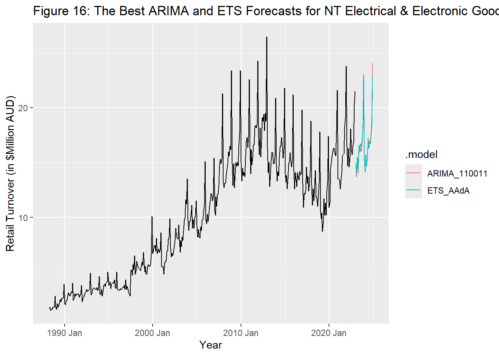
At a general glance, the predictions for the best ARIMA and ETS model seem to be similar.
Best ARIMA Model Parameters
The parameter estimates for the ARIMA(1,1,0)(0,1,1)[12] model can be seen below.
Similar to the previous analysis, these parameters suggest that the differenced turnover series is negatively influenced by its value 1 month ago, with the first lag having a somewhat strong effect. There is also a strong negative seasonal moving average component, indicating that unexpected shocks from the same period in the previous year significantly impact the current turnover.
Compared to the previous parameters, the new estimates are slightly stronger.
Best ARIMA Model Forecasts and Prediction Intervals
The point forecasts and the 80% prediction intervals for the following 24 months (Jan 2023 to Dec 2024 ) can be visualised in Figure 17 and numerically summarised in Table 13.
best_forecasts |>filter(.model =="ARIMA_110011") |>autoplot(retail, level =80) +labs(title ="Figure 17: Forecast and Prediction Intervals from Best ARIMA Model\nof the Next 24 Months ", y="Retail Turnover (in $Million AUD)")
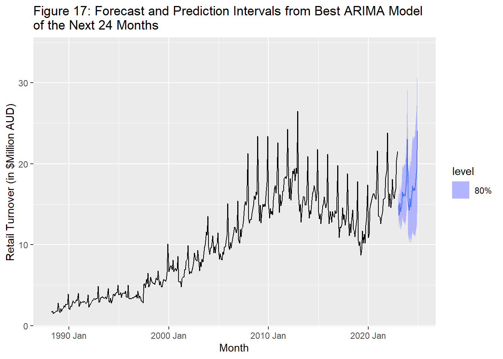
best_forecasts |>filter(.model =="ARIMA_110011") |>hilo(level =80) |>rename(`Point Forecast`= .mean, `80% Prediction Interval`=`80%`) |>mutate(`80% Prediction Interval`=gsub("80$", "", `80% Prediction Interval`)) |># Remove the "80" at the endselect(Month, `Point Forecast`, `80% Prediction Interval`) |>kable(caption ="Table 13: Point Forecast and Prediction Intervals from Best ARIMA Model")|>kable_styling(full_width =FALSE)
Table 13: Point Forecast and Prediction Intervals from Best ARIMA Model
Month
Point Forecast
80% Prediction Interval
2023 Jan
14.91867
[13.536407770561, 16.3476167198057]
2023 Feb
13.66724
[12.0743061123224, 15.3285024029326]
2023 Mar
15.13253
[13.0593517101422, 17.3111572253398]
2023 Apr
14.06638
[11.8739626637415, 16.3867139439862]
2023 May
14.94237
[12.38958817232, 17.659491660495]
2023 Jun
16.54485
[13.5108811716834, 19.7896885020027]
2023 Jul
15.98842
[12.8377258680195, 19.3759238482775]
2023 Aug
16.29218
[12.8899640978551, 19.9669039979105]
2023 Sep
16.00654
[12.4765948017474, 19.8367578836819]
2023 Oct
16.92421
[13.0313513788104, 21.1640704336433]
2023 Nov
18.45754
[14.0618538877921, 23.2605366657107]
2023 Dec
23.05513
[17.462738287817, 29.1765161788236]
2024 Jan
15.38439
[11.2941524631044, 19.9037986174992]
2024 Feb
14.25892
[10.2700725455525, 18.6913901949697]
2024 Mar
15.74702
[11.2003135661179, 20.8181914756006]
2024 Apr
14.66225
[10.2400881691663, 19.6210355729572]
2024 May
15.57661
[10.742124649313, 21.0177610446771]
2024 Jun
17.24711
[11.7728882370619, 23.4266528547575]
2024 Jul
16.68043
[11.2112332550654, 22.8819721370526]
2024 Aug
17.00540
[11.2839411276574, 23.5169692015977]
2024 Sep
16.71907
[10.9379673244418, 23.3252138968436]
2024 Oct
17.68143
[11.4482622196222, 24.8252202011049]
2024 Nov
19.28335
[12.38083401334, 27.2131854918051]
2024 Dec
24.06476
[15.432163604491, 33.9855383633039]
As can be seen in Figure 17, the ARIMA model point forecasts seem to be somewhat seasonal but with not any large positive trend visible - instead the trend seems to be somewhat flat. The seasonality seems to be well captured and similar to what may be expected and the ARIMA prediction intervals seems to grow as time goes on, which is reasonable as predictions further in the future are more uncertain.
Best ETS Model Parameters
The parameter estimates for the ETS(A,Ad,A) model can be seen below.
As seen, the ETS smoothing parameter estimates are:
alpha (\(\alpha\)) = 0.6807128
beta (\(\beta\)) = 0.0002990292
gamma (\(\gamma\)) = 0.07459788
phi (\(\phi\)) = 0.9018567
The relatively high alpha signifies that the model heavily relies on the most recent observations for forecasting the level. The very low beta suggests that trend is not apparent in the model, and the quite low gamma values suggest that seasonality are present but do not dominate the model. The damping factor (phi) is close to 1, meaning the trend component will gradually diminish over time.
We also see from the initial trend, b[0], as it is positive, it signifies that the trend is very slightly increasing.
Compared to the previous ETS parameters, the estimates are smaller for each of the parameters - especially for beta. Additionally, the b[0] changed from negative to positive.
Best ETS Model Forecasts and Prediction Intervals
The point forecasts and the 80% prediction intervals for the following 24 months (Jan 2023 to Dec 2024 ) can be visualised in Figure 18 and numerically summarised in Table 14.
best_forecasts |>filter(.model =="ETS_AAdA") |>autoplot(retail, level =80) +labs(title ="Figure 18: Forecast and Prediction Intervals from Best ETS Model\nof the Next 24 Months ", y="Retail Turnover (in $Million AUD)")
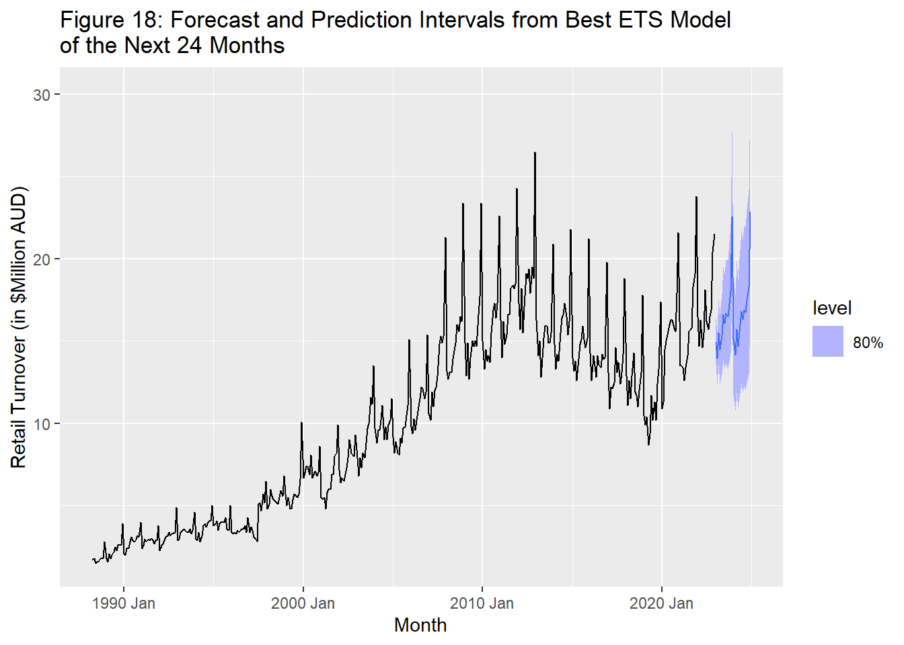
best_forecasts |>filter(.model =="ETS_AAdA") |>hilo(level =80) |>rename(`Point Forecast`= .mean, `80% Prediction Interval`=`80%`) |>mutate(`80% Prediction Interval`=gsub("80$", "", `80% Prediction Interval`)) |># Remove the "80" at the endselect(Month, `Point Forecast`, `80% Prediction Interval`) |>kable(caption ="Table 14: Point Forecast and Prediction Intervals from Best ETS Model")|>kable_styling(full_width =FALSE)
Table 14: Point Forecast and Prediction Intervals from Best ETS Model
Month
Point Forecast
80% Prediction Interval
2023 Jan
14.95440
[13.5775087379121, 16.3774896896213]
2023 Feb
13.95741
[12.3984405264223, 15.580335918704]
2023 Mar
15.49193
[13.5331313661932, 17.5422593615693]
2023 Apr
14.47784
[12.4317722877101, 16.6314528599905]
2023 May
15.39119
[13.0351531201098, 17.8820646289349]
2023 Jun
16.61070
[13.896422892683, 19.4915631741371]
2023 Jul
16.09438
[13.2851339431004, 19.0887110509229]
2023 Aug
16.68472
[13.6169058102621, 19.9663718177104]
2023 Sep
16.49313
[13.3028950712541, 19.9183343409562]
2023 Oct
17.25201
[13.777026543744, 20.9945158885369]
2023 Nov
18.04070
[14.2714043608473, 22.112065391931]
2023 Dec
22.56585
[17.7734429671922, 27.7492943351274]
2024 Jan
15.15852
[11.6716230487012, 18.9562496157982]
2024 Feb
14.15049
[10.7690542289069, 17.8464544628531]
2024 Mar
15.70174
[11.8744833069051, 19.8929899659262]
2024 Apr
14.67648
[10.9752040325418, 18.7435427641732]
2024 May
15.59971
[11.5843610825565, 20.0211544379851]
2024 Jun
16.83224
[12.4226222504319, 21.6968319791489]
2024 Jul
16.31025
[11.9234431388464, 21.1634665642464]
2024 Aug
16.90679
[12.2728066406954, 22.0442189910247]
2024 Sep
16.71302
[12.0292387676205, 21.9187954244309]
2024 Oct
17.47983
[12.5019029130759, 23.0228823981443]
2024 Nov
18.27668
[12.9921120332112, 24.1718144112227]
2024 Dec
22.84804
[16.2549106588947, 30.2011831235313]
As can be seen in Figure 18, the ETS model point forecasts, similar to the ARIMA model point forecasts, seem to be somewhat seasonal but with not any large positive trend visible - instead the trend seems to be somewhat flat. The seasonality seems to be well captured and similar to what may be expected and the ETS prediction intervals seems to grow as time goes on, which is reasonable as predictions further in the future are more uncertain.
Question 10: Obtain and Evaluate Model on Up-to-date Data
The latest up-to-date data was taken from “Table 11. Retail turnover, state by industry subgroup, original” which can be found here. The latest up-to-date data on Northern Territory’s Electrical and electronic goods retailing was obtained.
# Latest Data: https://www.abs.gov.au/statistics/industry/retail-and-wholesale-trade/retail-trade-australia/mar-2025#data-downloads# After inspecting the excel sheet, I saw that my data (NT Turnover of Electrical and Electornic Goods) can be found in Column EC of sheet Data1. # Extract the dates of the time seriesretail_date <-read_excel("8501011.xlsx",sheet ="Data1",range ="A82:A523" )# Extract the Turnover value of the time seriesretail_turnover <-read_excel("8501011.xlsx",sheet ="Data1",range ="EC82:EC523")# Combine the dates and turnover columns, rename the columns, make it similar format to original retail data (tsibble, key, Industry, Series_ID)retail_updated <-bind_cols(retail_date, retail_turnover) |>rename(Month =1, Turnover =2) |>mutate(Month =yearmonth(Month),State ="Northern Territory",Industry ="Electrical and electronic goods retailing",Series_ID ="A3349598V") |>as_tsibble(index = Month, key =c(State, Industry))
Figure 19 visualises the best ARIMA and ETS model point forecasts with the true turnover in Northern Territory’s Electrical & Electronic Goods Retailing.
# Visualise the two forecasts with the true valuebest_forecasts |>autoplot(tail(retail_updated, 24), level =NULL) +labs(title ="Figure 19: The Best ARIMA and ETS Forecasts for Northern Territory's\nElectrical & Electronic Goods Retailing Turnover",y="Retail Turnover (in $Million AUD)",x ="Year" )
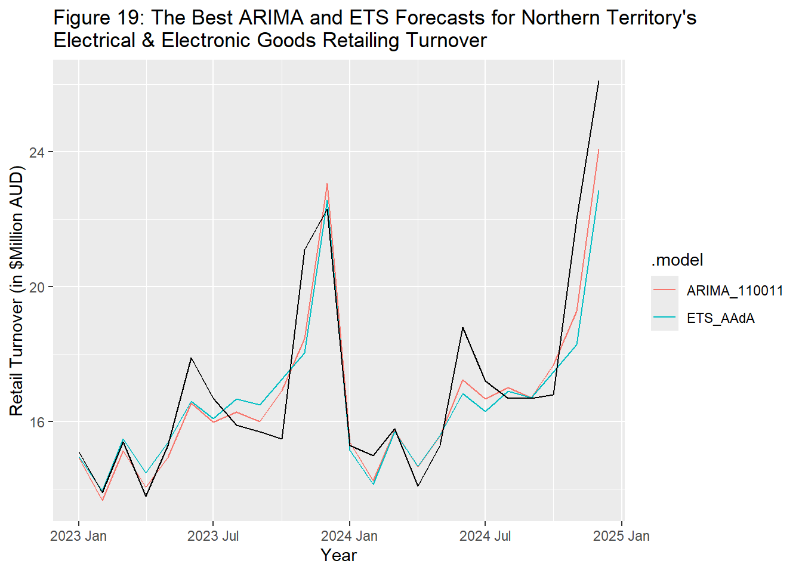
As can be seen in Figure 19, the ARIMA(1,1,0)(0,1,1)[12] model seems to better predict the point forecasts compared to the ETS(A,Ad,A). However, to confirm this, Table 15 outlines the RMSE Score for the two models.
# Compare RMSE best_forecasts |>accuracy(tail(retail_updated, 24)) |>select(.model, RMSE) |>kable(caption ="Table 15: RMSE Score for the Best ARIMA and ETS Model")
Table 15: RMSE Score for the Best ARIMA and ETS Model
.model
RMSE
ARIMA_110011
1.090783
ETS_AAdA
1.400221
As visualised in Figure 19 and confirmed in Table 15, the ETS(A,Ad,A) Model, which we evaluated as the best for the previous test-set, actually performs worse than the ARIMA(1,1,0)(0,1,1)[12] model on the next two years - as seen in the RMSE value. As such, to predict the next two years of data, the ARIMA(1,1,0)(0,1,1)[12] is actually the better model.
Question 11: Benefits and Limitations of the Models for the Time Series
Benefits of the Models
Both ARIMA and ETS models produce similar and reasonable point forecasts, successfully capturing trend and seasonality in the retail turnover data.
The true turnover values fall within the 80% prediction intervals of both models, suggesting a good level of reliability for short-term forecasts.
Both models were visually and logically derived, making them interpretable and justifiable in practical applications.
Limitations of the Models
There is model instability in terms of performance: ETS performed better on a previous test set, while ARIMA performed better on the current one — this variability reduces confidence in selecting a single “best” model.
As new data is added, the underlying time series characteristics may shift, making the assumptions of stationarity (ARIMA) or exponential smoothing (ETS) less valid — the models may degrade over time without re-evaluation.
Neither model passed the residual diagnostics fully: residuals from both models are still distinguishable from white noise, suggesting that some structure in the data remains unexplained, and future forecast accuracy may suffer.
Cross-validation or rolling-origin evaluation was not implemented, limiting the robustness of model selection. A single train-test split may not sufficiently capture model performance over time.
ETS models may struggle with sudden changes or external shocks (i.e. cyclical behaviour such as business cycle boom and bust), while ARIMA models, although more flexible, require more manual tuning and differencing decisions, which can be error-prone without careful diagnostics.
Neither the ETS nor ARIMA model alone can adequately capture unique events or structural breaks, which could be better handled using regression models with dummy variables — for example, to account for outliers or events (such as COVID-19 impact) that should be excluded from future forecasting.